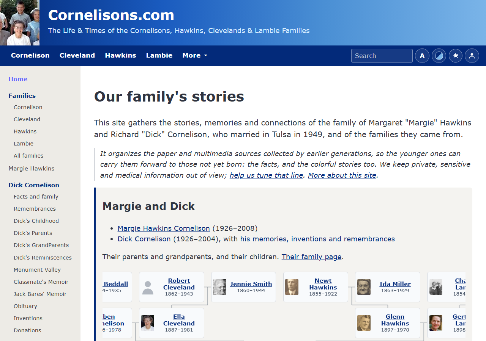

Building a family history site • Part 1
Stories, not pedigrees
Legacy the master copy
→
GEDCOM
→
build script
→
people.json
→
static site
- One source of truth. Fix it in Legacy; the next export fixes the site.
- Stories come first. Facts only as far as a story needs them.
- Static and rebuilt on push. Nothing to attack at runtime.
- Link out to FamilySearch for the full pedigree.
cornelisons.com
